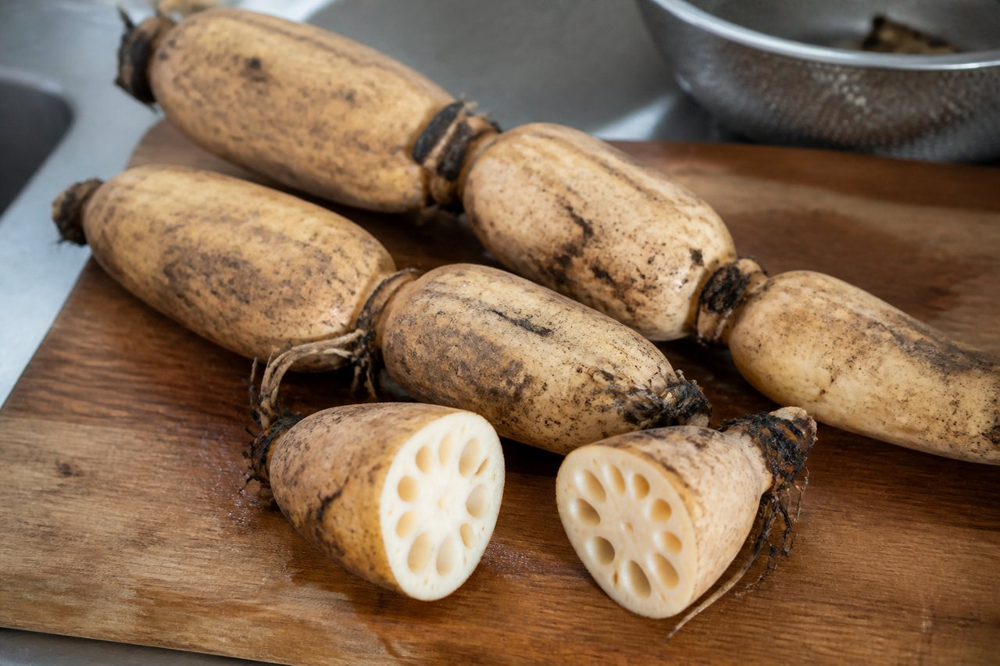

Kitchen · Local · Stories
밥상 위의 작은 궁금증,
같이 풀어봐요
떡이 딱딱해져서 막막했던 순간의 해결법부터, 밥상에서 시작해 우리 지역 곳곳으로 떠나는 축제 소식과 맛 이야기, 옛이야기까지 쉽고 따뜻하게 모았습니다.

- 출처를 확인한 정보
- 바로 따라 하는 방법
- 밥상에서 지역까지

호랑이와 곶감 이야기 — 4장면으로 읽는 우리 옛이야기
우는 아이가 곶감이라는 말에 울음을 그치자 호랑이가 곶감을 자기보다 무서운 짐승으로 오해해 달아난다는 옛이야기를 4장면으로 풀었어요. 다른 판본과 옛 기록 속 곶감 이야기, 곶감 먹는 법과 보관 요령도 짧게 담았습니다.

구룡포 과메기 이야기, 알아두면 좋은 4가지
겨울 포항 구룡포의 대표 먹거리 과메기 이야기를 들려 드려요. 관목에서 온 이름의 유래, 청어에서 꽁치로 바뀐 사연, 해풍에 얼리고 말리는 방식, 쌈 먹는 법, 집에서 보관하고 해동하는 요령, 올해 축제 소식까지 차근차근 담았어요.

황태 이야기 — 명태가 황태가 되는 3가지와 용대리·대관령 덕장
황태는 명태를 겨울 덕장에서 얼리고 녹이며 말린 것입니다. 생태·동태·코다리·북어와 어떻게 다른지, 인제 용대리와 평창 대관령 덕장 이야기, 황태가 되는 3가지 조건, 먹는 법과 불리기·보관 요령까지 차근차근 담았어요.

도루묵 이야기 — '말짱 도루묵'의 유래와 동해안 먹는 법 3가지
겨울 동해안 도루묵 이야기를 담았어요. '말짱 도루묵' 유래와 임금이 누구였는지 엇갈리는 이설, 올해 11월 어획 소식, 알배기 고르는 법, 구이·조림·찌개 먹는 법과 보관 요령까지 자료로 확인된 내용만 차분히 풀어 썼습니다.

겨울 강원 축제 5곳, 일정이 나온 곳과 아직인 곳
화천 산천어, 평창송어, 철원 얼음트레킹, 대관령 눈꽃, 태백산 눈축제까지 겨울 강원 축제 5곳을 골랐는데요. 2027년 날짜가 올라온 곳과 지난해 기준으로만 알 수 있는 곳을 나누고, 확인 못 한 점도 밝혔습니다.

안동 간고등어 이야기 — 영덕에서 안동까지 이틀, 소금이 지켜 준 고등어
바다 없는 안동에서 간고등어가 대표 음식이 된 이야기를 들려 드려요. 동해 영덕에서 이틀 걸려 오던 길과 간잽이, 특산물이 된 과정, 구이·찜·조림 먹는 법과 집에서 굽는 요령까지 차근차근 담았어요. 소금이 만든 맛 이야기입니다.

유자청 만드는 법 4단계, 집에서 담그는 방법
유자청은 씻고 손질하기, 썰어 설탕에 버무리기, 병에 담아 숙성하기, 보관하고 타 마시기의 네 단계로 담급니다. 설탕 1:1 기준과 병 소독, 냉장 보관, 곰팡이가 생겼을 때 대처, 드실 때 주의할 점까지 보도를 근거로 알려 드려요.

시금치 보관법 3가지, 겨울 시금치 오래 먹는 방법
겨울 시금치는 잎이 얇아 며칠만 지나도 물러지는데요. 씻지 않고 싸서 냉장하는 법, 데쳐서 냉동하는 법, 먹기 직전 씻는 손질 요령 3가지와 고르는 법, 포항초·섬초 이야기, 냉동 시금치 쓰는 법까지 알려 드릴게요.

곶감 만드는 법 4단계, 집에서 말리는 방법
곶감은 떫은감을 고르고 깎아서 꼭지를 묶어 매달고, 바람 부는 곳에서 말리며 살핀 뒤 보관하는 네 단계로 만듭니다. 아파트에서 말릴 때 주의할 점과 시상과 곰팡이 구분법, 날씨에 따라 달라지는 건조 기간까지 알려 드려요.

깍두기 담그는 법 5단계, 무 고르기부터 숙성까지
깍두기는 무 고르고 썰기, 절이기, 양념 만들기, 버무리기, 숙성과 보관의 다섯 단계로 담급니다. 농촌진흥청 영상 기준 무 2kg 분량표와 절이는 시간, 보도마다 다른 숙성법, 간 맞추는 요령, 자주 묻는 질문까지 알려 드려요.

김장김치 보관법 3가지, 겨우내 맛있게 먹는 방법
김장김치를 겨우내 맛있게 먹으려면 처음 숙성, 냉장 온도, 통과 국물 관리 세 가지가 중요해요. 연구 결과와 기사로 확인한 김치냉장고·일반 냉장고의 온도와 보관 기간, 통을 채우는 요령, 하얀 막과 부푼 뚜껑 대처법까지 차근차근 알려 드립니다.

연근 손질·보관법 3가지 — 갈변 막기, 냉장, 냉동
연근은 껍질을 벗기고 자르면 금방 색이 변하는데요. 식초물에 담가 갈변을 막고, 냉장·냉동으로 보관하시면 됩니다. 사 올 때 고르는 법과 아삭하게 삶는 요령, 연근조림·연근전 활용까지 하나하나 차근차근 알려 드려요.